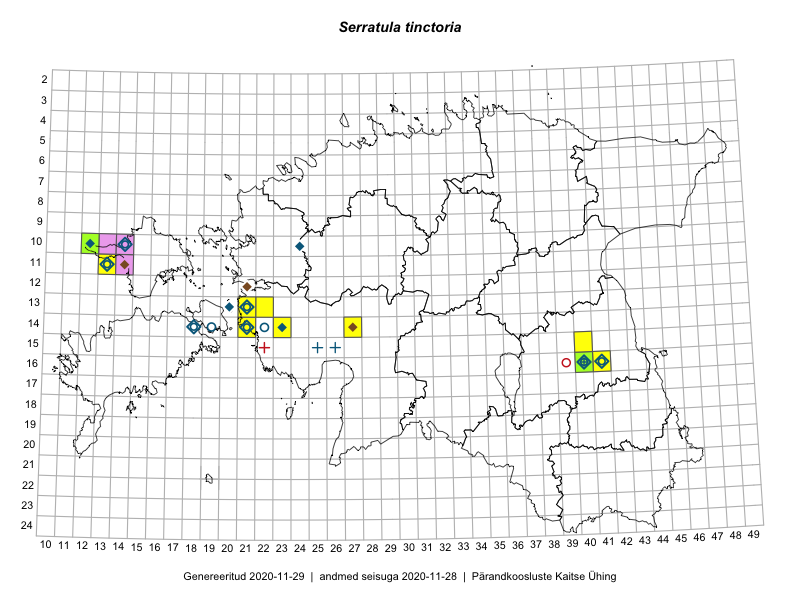

Serratula tinctoria
Uuendatud: 2016-12-07
Kaardile koondatud taksonid: Serratula tinctoria L.

Kaart põhineb 9 vaatlusel. Taime on leitud 5 ruudust.
| Ruut | Vaatleja(d) | Vaatlusaeg | Kirje tüüp | Viide andmebaasikirjele |
|---|---|---|---|---|
| 16-40 | Thea Kull | 2015-07-07 | ruut/ala | vaata PlutoFis |
| Malle Leht | 2015-07-28 | ruut/ala | vaata PlutoFis | |
| 16-40 | Thea Kull | 2015-07-26 | punkt | vaata PlutoFis |
| 13-22 | Kirsi Loide, Marje Loide | 2015-08-10 | ruut/ala | vaata PlutoFis |
| 16-40 | Maret Gerz, Ott Luuk | 2014-06-25 | ruut/ala | vaata PlutoFis |
| 15-35 | Liina Oja, Susanna Vain, Elle Rajandu | 2016-07-22 | punkt | vaata PlutoFis |
| 19-33 | Liina Oja, Elle Rajandu | 2016-07-18 | punkt | vaata PlutoFis |
| 14-21 | Toomas Kukk | 2012-06-25 | ruut/ala | vaata PlutoFis |
| 14-21 | Toomas Kukk | 2012-06-25 | ruut/ala | vaata PlutoFis |